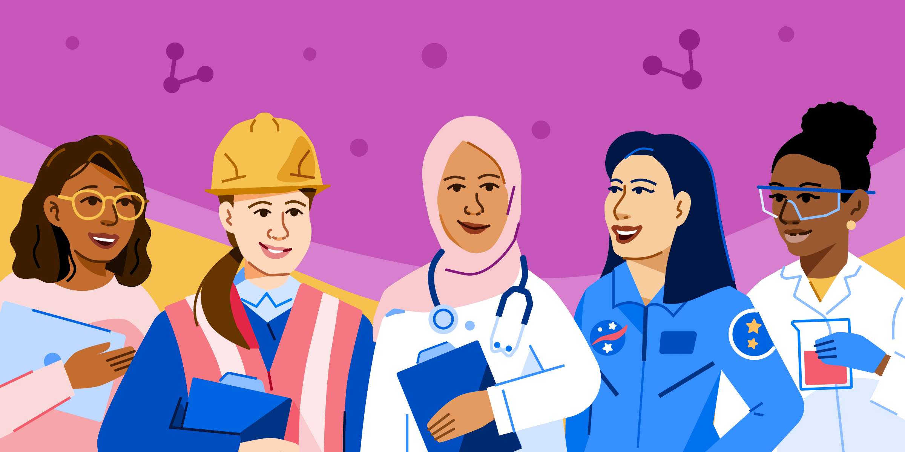

.png)
Women in STEM
Representation in STEM
Women remain significantly underrepresented in science, technology, engineering, and mathematics (STEM) fields worldwide. Although progress has been made over recent years, women still make up only around 28% of the STEM workforce globally. This imbalance is particularly noticeable in fields such as engineering and computer science, where female participation remains low. The lack of representation not only limits diversity but also reduces the variety of perspectives that are essential for innovation and problem-solving. When women are not equally represented, entire industries miss out on valuable talent and ideas that could drive progress forward.

Challenges Women Face
Women in STEM face a range of barriers that can discourage them from entering or continuing in these fields. These include gender stereotypes, which often portray STEM careers as more suitable for men, and a lack of visible female role models. In addition, women may experience discrimination, unequal pay, and limited opportunities for career advancement in the workplace. Educational barriers also exist, as girls are sometimes less encouraged to pursue subjects like mathematics and science from a young age. These challenges create an environment where women may feel unsupported, leading to lower participation and higher dropout rates in STEM careers
Why It Matters
Achieving gender equality in STEM is essential for both social and economic development. When women are equally involved in these fields, it leads to greater innovation, as diverse teams are more likely to generate creative and effective solutions. Closing the gender gap in STEM can also contribute to economic growth by increasing the number of skilled workers and improving productivity. Furthermore, representation matters because it inspires future generations of girls to pursue careers in STEM, creating a positive cycle of inclusion and opportunity. Ensuring equal participation is not only fair but also necessary for building a more balanced and sustainable future

Solutions and Progress
Addressing gender inequality in STEM requires a combination of education, policy changes, and cultural shifts. Encouraging girls to engage with STEM subjects from an early age is a key step, as early exposure helps build confidence and interest. Schools and organisations can promote female role models to inspire young women and show that success in STEM is achievable. In the workplace, companies can implement policies that support equality, such as fair hiring practices, equal pay, and inclusive environments. There has already been progress, with many global initiatives working to close the gender gap, but continued effort is needed to ensure long-term change